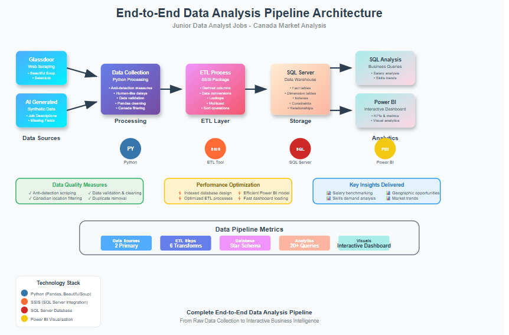
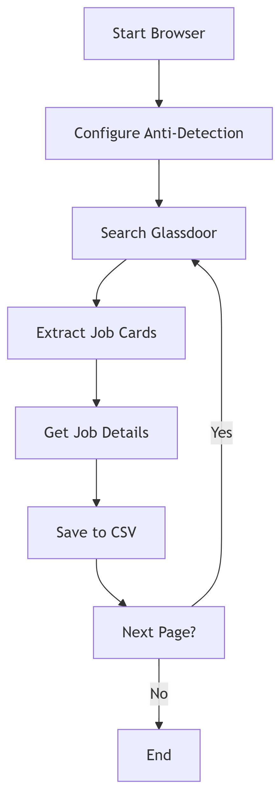
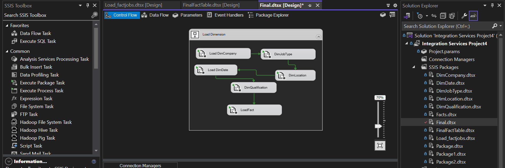
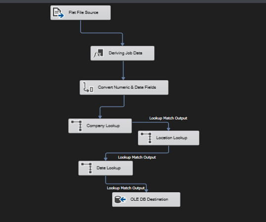
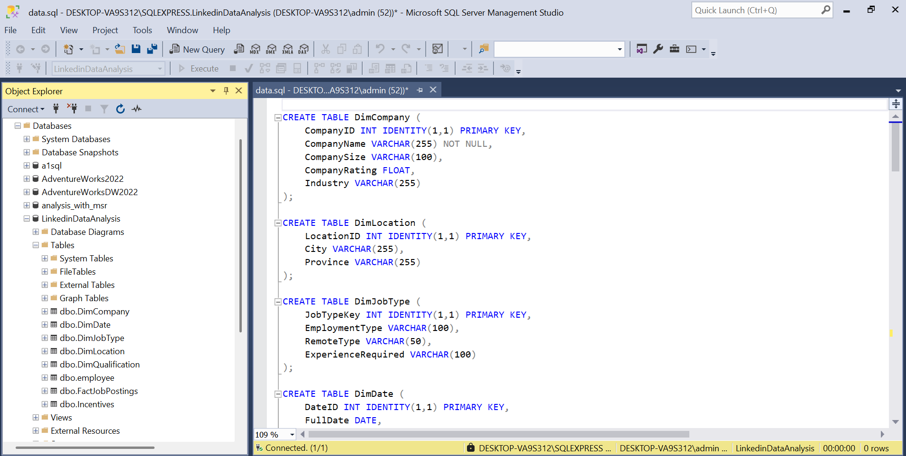
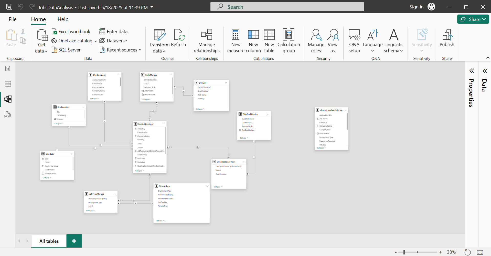
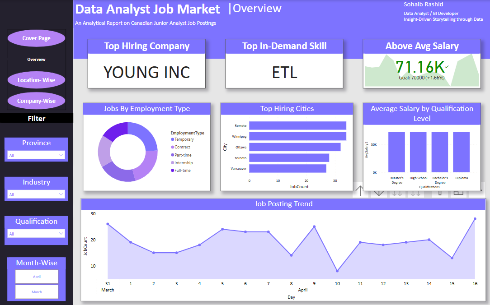

Comprehensive analysis of junior data analyst positions in Canada, covering the complete data lifecycle from web scraping to interactive dashboards.
To identify trends, salary ranges, skill requirements, and geographic distribution of junior data analyst opportunities across Canada.







Demonstrating comprehensive data engineering and analytics capabilities